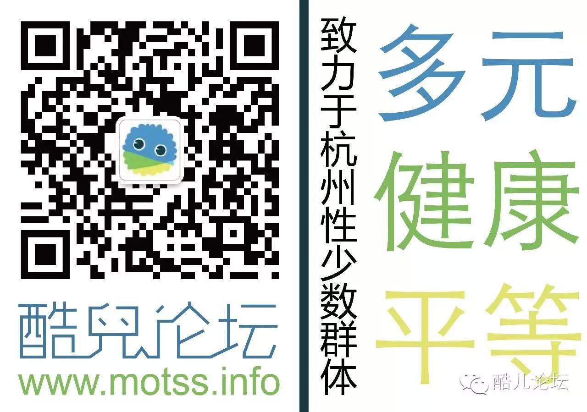

写下这个标题时，我想到了年中论坛上关于“酷儿”这个名字的一场争论（主菜单“推荐阅读”下的“唱唱反调”可见）：有会员认为酷儿英文原词Queer有“伤害同志”的意味，希望论坛改名。一开始我认为这是一次无厘头的、因误解造成的“争议”，但是随着讨论继续，我意识到了争论背后同志对污名化的敏感，内化的恐惧，以及单一的“反”话语。撇清污名词汇、强调“正常”成为了争论双方的直觉反应。面对主流价值观的压力时，“反抗”的声音也终究不免俗的要依靠主流的话语，在同志这里，强调同志的“正常性”被扩大到了任何角落，娘炮、性癖好、多元关系等任何“超越主流”的事都被当做负面和压力的对象，为同志发声、强调同志骄傲的行为也被理解为出格和异化。
于是我们借用“拥抱污名化”这个概念，向争论双方提供了一个对主流话语的“背叛”与反思的机会。就像淋淋《不一样又怎样》这个歌名，同志不用单纯通过向主流社会靠拢而获得接纳和包容并把主流的价值观投射向内部的更小众群体，而是可以大胆的以自己所舒服的方式界定、表达自己的身份，将反思引向污名背后的固有价值观和背后的深层因素——而我们往往并非这些价值观的唯一受害者，这也可以是我们获得盟友和认可的方式。
这也是我们选择在年末拍摄《同根》这部微电影的原因。我们希望在“同志骗婚”这个思维导向已经被固化的话题上，增加一个新的思路：骗婚的施加者与接受者所遭受的痛苦实乃同根同源——异性恋父权社会下婚姻制度、生育崇拜等等都应该是我们反思的对象，而非单纯的指责任何一方，甚至带来对某个群体的异化；而这个过程都是以一个学生（主角）的视角来记录和完成，这也符合我们的受众身份。至于这个效果是否达到，欢迎各位1月3日来新年趴鉴定。
这个思路是主创团队集体思考的结果，与今年所有的论坛决策一样，它也是论坛新结构、新愿景下的产物。在2015年4月，我们以一个目的模糊的志愿者小组的身份，完成了“以学生群体为服务对象的草根非营利社区组织”的自我界定，并开始了走向这个新身份的漫长道路。在半年的组织内建中，我们在全体志愿者、热心会员、利益相关方的参与下制定了论坛的愿景（致力于……），任何决策都将以此为最终目标和准绳；完成了理事会—行政部门/项目小组/论坛运营的组织架构新框架，在9月-10月完成了招募了新志愿者。我们现在是一个包含LGBTQA（ally），覆盖了杭州浙大、下沙、小和山、滨江几大高教区和杭州外高校的33人的多元化志愿者团队。
这一年我们游走在校园与社会之间，为同志社会可见度和校园同志生活同时努力：首次将活动放到下沙高教园，也首次参与到学校官方活动中；我们力争同志权利，与校园BBS中的反同言论撕逼；我们与好姐妹“向阳花开”重建了杭州同志中心，为所有在杭同志提供了一个温馨的新家。作为一个服务高校学生的组织，这样的模式并非主流，可以说我们也是“高校LGBT社团”中的另类和“酷儿”。但是“酷儿”的价值也逐渐被同仁和大众所发现，今年6月我们获邀参加上海骄傲节LGBT小组开放日活动，11月我们参与了联合国开发计划署媒体与性别少数议题研讨会（暨2015LGBT组织大会），就在2015年最后一天，我们又获颁青桐奖“媒体之星”、“服务之星”奖，这些认可对每一位志愿者都是鼓励，也是对每一个支持者的答卷。
当然，我们无法忽视那些依然存在的问题，我们的新媒体平台获得了很多关注，而传统论坛却日趋乏力，我们对校园的关注、参与还由于各种原因受到限制……这些问题将会如何解决，我们依然会在全体志愿者和您的参与下做出符合愿景的决定。2016年是酷儿的第十四个年头，作为现存的中国最早LGBT组织之一，我们希望它走得更远。
祝您新年快乐，祝您有更大的勇气在2016年，继续做一个酷儿。
owen
